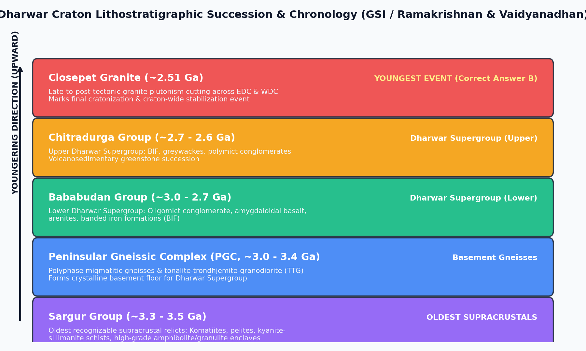

The Dharwar Craton of southern peninsular India represents one of the premier Archean cratonic nuclei on Earth. Its evolution spans from the Paleoarchean (~3.5 Ga) to the Neoarchean-Paleoproterozoic boundary (~2.5 Ga). Geologically, the craton is divided by the linear, crustal-scale Closepet Granite batholith into the Western Dharwar Craton (WDC) and the Eastern Dharwar Craton (EDC).
Single-zircon U-Pb TIMS and SHRIMP geochronology constrains the Closepet Granite crystallization age precisely to $2513 \pm 5\text{ Ma}$, proving unequivocally that it represents the youngest event in Dharwarian stratigraphy.

| Stratigraphic Unit | Age (Ga) | Primary Lithologies | Tectonic Role & Stratigraphic Relationship |
|---|---|---|---|
| Closepet Granite | ~2.51 Ga | Porphyritic granite, adamellite, monzonite | Youngest event; post-kinematic batholith marking craton stabilization |
| Dharwar Supergroup | ~2.6 - 3.0 Ga | Conglomerates, basalt flows, BIF, greywackes | Greenstone cover sequence (Bababudan & Chitradurga Groups) |
| Peninsular Gneissic Complex | ~3.0 - 3.4 Ga | Migmatitic TTG gneisses, granodiorite | Basement floor beneath Dharwar Supergroup |
| Sargur Group | ~3.35 - 3.58 Ga | Komatiites, kyanite-pelites, layered gabbro-anorthosite | Oldest relict supracrustal enclaves inside PGC |